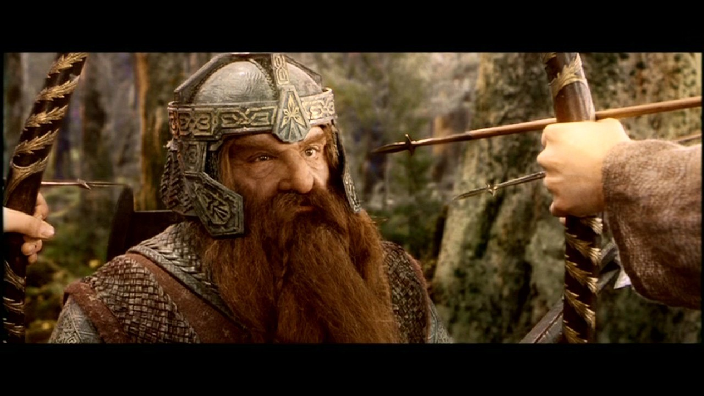
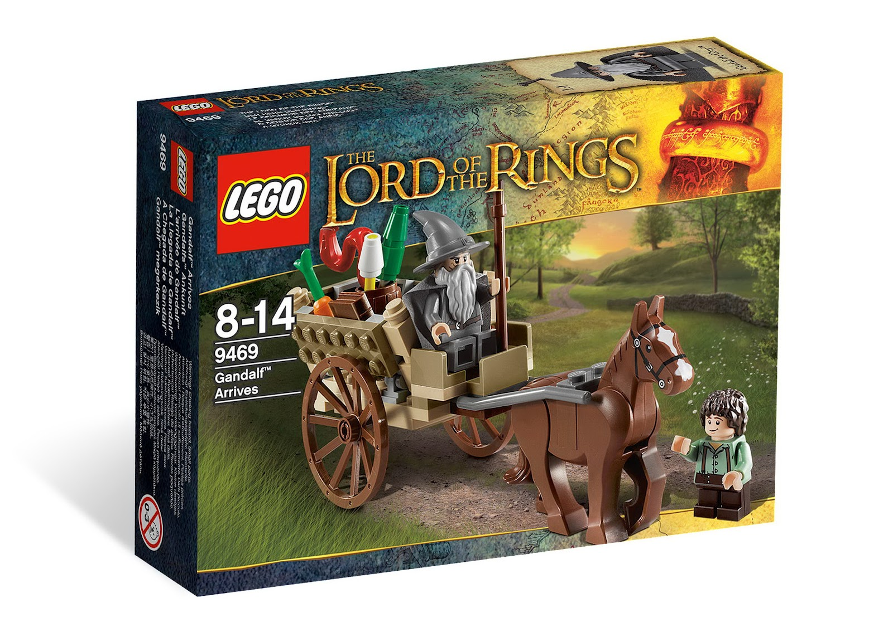
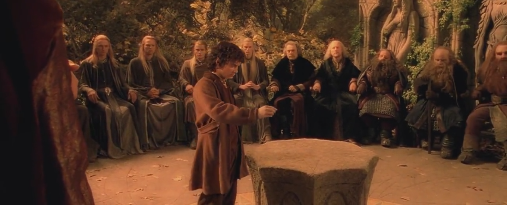

/us
var lesPolypodes = {
"age": 8
, "count": 11
, "origin": "Nantes, France"
, "web": "lespolypodes.com"
, "twitter": "@lespolypodes"
, "open-source": "github.com/polypodes"
, "devlog": "lespolypodes.tumblr.com"
, "tags": [
"accessibility hacktivists"
, "web apps crafters"
, "public administration project managers"
, "open-minded fellows"
, "beers connoisseurs"
]
}
/me
var me = {
"user": "Ronan"
, "age": 35
, "origin": ""
, "twitter": "@arno_u_loginlux"
, "repo": "github.com/ronanguilloux"
, "work": "cto@lespolypodes.com"
, "devlog": "arnolog.net"
, "tags": [
"dad"
, "bearded open-source web developer"
, "J.R.R. Tolkien fan"
]
}
Web Artisan
since 1999
What the hell
is Open-Source
4 essential freedoms
- 0: run the program for any purpose
- 1: study how it works, and change it
- 2: redistribute copies
- 3: improve and release to the public
Legal basis
- Authoring
-
copyright & copyleft
-
licence choice
-
intellectual property rights
-
restrictions on distribution
Copyleft Vs BSD
Are you GNU/GPL or MIT?
Security ?

[Your boss:] "Are open-source softwares
more secure than closed ones?"
Looking for an adventure?
READ code lines from Open-Source
100% benefit each time
Choose a playground

Start small. Maintain the fun.
Share early, share often

Expect Feedbacks
of any kind.
How we choose an open-source project?

Good advices from the trenches
Ask the Ancients
In the past, they fought the same ennemies.
Always evaluate the activity
Avoid one-man projects
unpopular projects, cloistered environments, ivory towers
DRY, KISS, SOLID
Please learn this words.
Send contributions!
Great open-source developers
always grant contributors
Respect processes
keep familiar with others traditions
Don't be afraid of failure
Fail fast, fail early, fail early.
& stay away from the trolls
Related: auto-proclamed gurus, peremptory talks, pedantry, etc.
Attend to open-source events & conference
don't miss the opportunity for a relaxing drink
Be hired.
Be evaluated on what you've shared